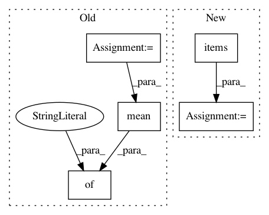

a41f2ff4c1437f0b61e76265c31bdec71be0556f,softlearning/algorithms/sql.py,SQL,get_diagnostics,#SQL#Any#Any#Any#Any#,386
Before Change
Q_values, Q_losses = self._session.run(
[self._Q_values, self._Q_losses], feeds)
diagnostics = OrderedDict({
"Q-avg": np.mean(Q_values),
"Q-std": np.std(Q_values),
"Q_loss": np.mean(Q_losses),
})
policy_diagnostics = self._policy.get_diagnostics(batch["observations"])
diagnostics.update({
After Change
diagnostics.update(OrderedDict([
(f"policy/{key}", value)
for key, value in
self._policy.get_diagnostics(batch["observations"]).items()
]))
if self._plotter:
self._plotter.draw()
In pattern: SUPERPATTERN
Frequency: 4
Non-data size: 5
Instances
Project Name: rail-berkeley/softlearning
Commit Name: a41f2ff4c1437f0b61e76265c31bdec71be0556f
Time: 2019-04-26
Author: hartikainen@berkeley.edu
File Name: softlearning/algorithms/sql.py
Class Name: SQL
Method Name: get_diagnostics
Project Name: rail-berkeley/softlearning
Commit Name: a41f2ff4c1437f0b61e76265c31bdec71be0556f
Time: 2019-04-26
Author: hartikainen@berkeley.edu
File Name: softlearning/algorithms/sac.py
Class Name: SAC
Method Name: get_diagnostics
Project Name: Scitator/catalyst
Commit Name: 8ef3f88cfe38c9178ec53cca4025eeacbe230741
Time: 2019-09-20
Author: scitator@gmail.com
File Name: catalyst/rl/core/sampler.py
Class Name: ValidSampler
Method Name: _run_sample_loop